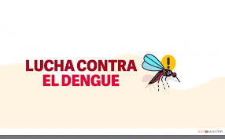
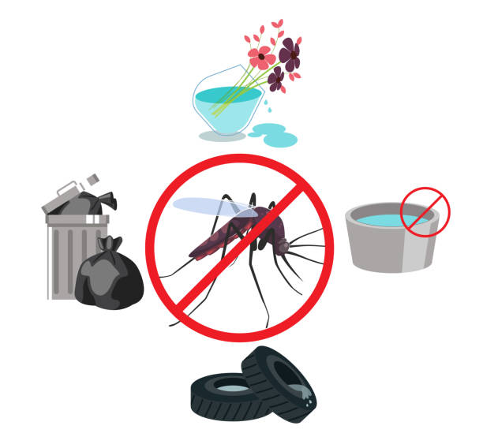
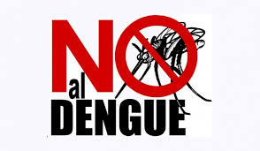
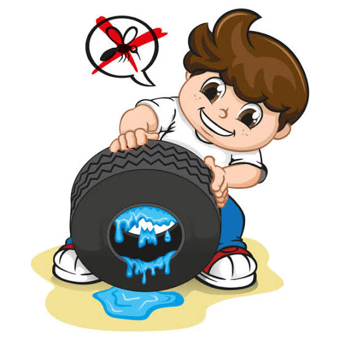

Detección, prevención y respuesta inmediata
Radar se encarga de monitorear zonas de riesgo, detectar criaderos potenciales, lanzar alertas, y coordinar acciones inmediatas entre autoridades de salud, brigadas comunitarias y ciudadanos.
Radar Zapotiltic nace como una respuesta activa frente a los retos de salud pública en nuestro municipio. Su misión es clara: actuar hoy con inteligencia, organización y comunidad para detener el avance del dengue y mejorar la calidad de vida de los ciudadanos.

Radar se encarga de monitorear zonas de riesgo, detectar criaderos potenciales, lanzar alertas, y coordinar acciones inmediatas entre autoridades de salud, brigadas comunitarias y ciudadanos.
Una parte clave de la misión es educar para empoderar. A través de talleres, campañas visuales y uso de redes sociales, Radar enseña cómo identificar iesgos y prevenir la propagación del dengue.

Radar pone la tecnología al alcance de todos: apps móviles para reportes, mapas interactivos, alertas por WhatsApp y estadísticas abiertas. Queremos que cada persona tenga el poder de actuar.

Radar trabaja de la mano con autoridades municipales, centros de salud, escuelas y organizaciones civiles para asegurar una respuesta organizada, con base en datos reales y decisiones inteligentes.

La misión de Radar no descansa. Cada día se recolectan datos, se emiten reportes y se
ajustan estrategias. La constancia es la clave para mantener a Zapotiltic en pie de lucha contra el dengue.
Unidos hoy para construir el mañana
La misión de hoy es la base del futuro que queremos. Al actuar con responsabilidad, solidaridad y
tecnología, aseguramos que nuestros hijos vivan en un municipio más saludable y fuerte.